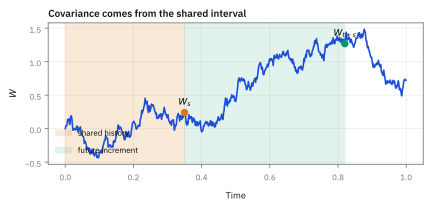
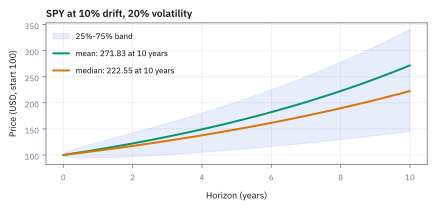
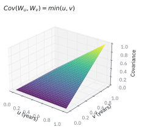
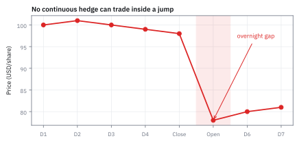
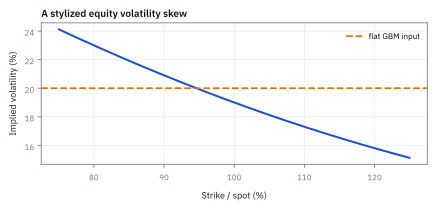

10.4 Why Geometric Brownian Motion (GBM) Is a Sensible Model for Stock Prices
GBM ผ่านเกณฑ์พื้นฐานที่ราคาหุ้นต้องมี แต่พลาดเรื่องวันร่วงแรง ราคาที่กระโดด และความผันผวนที่เปลี่ยนไปตามช่วง จึงใช้มันเป็นเส้นฐาน แล้ววัดว่าตลาดจริงเบี่ยงไปเท่าไร
ก่อนจะเอาแบบจำลองราคาตัวไหนไปใช้กับเงินจริง ต้องลองเทียบมันกับวันที่ตลาดจริงเจ็บหนักที่สุดก่อน หน้านี้ทดสอบ GBM (geometric Brownian motion) ซึ่งเป็นแบบจำลองที่มองว่าราคาขยับเป็นเปอร์เซ็นต์แบบสุ่ม (นิยามของ GBM) ด้วยคำถามง่าย ๆ ข้อหนึ่ง: GBM ทายความถี่ของวันร่วงแรงได้ใกล้ของจริงไหม
ของที่ใช้:
- S&P 500 คือดัชนีที่รวมราคาหุ้นของบริษัทใหญ่ 500 แห่งในสหรัฐฯ ใช้เป็นตัวแทนของตลาดหุ้นทั้งตลาด
- สมมติว่าดัชนีเดินตาม GBM ที่มีสองค่าคุมอยู่ ค่าแรกคือ drift $\mu=10\%$ ต่อปี คืออัตราที่ราคาโตโดยเฉลี่ย
- ค่าที่สองคือความผันผวน $\sigma=20\%$ ต่อปี คือขนาดการแกว่งของราคา วัดเป็น SD (standard deviation) ของผลตอบแทนในหนึ่งปี
- “วันลบ 5%” คือวันที่ราคาปิดต่ำกว่าราคาปิดของวันก่อนหน้าตั้งแต่ 5% ขึ้นไป
- ข้อมูลจริง: ปี 2020 ซึ่งเป็นปีที่โควิดระบาด S&P 500 มีวันลบ 5% ห้าวัน คือ 9, 12, 16 และ 18 มีนาคม กับ 11 มิถุนายน
GBM บอกว่าวันแบบนี้ควรเกิดบ่อยแค่ไหน และถ้าของจริงต่างจากแบบจำลองมาก ควรเลิกใช้ GBM ไหม?
ลองตอบก่อนเปิดเฉลย
GBM ให้โอกาสที่วันหนึ่งจะลบ 5% ขึ้นไปเพียง $p\approx2.10\times10^{-5}$ หรือ 0.0021% (ขั้นที่ 5 ของหน้านี้คำนวณตัวเลขนี้ให้ดูทีละขั้น) ปีหนึ่งมี 252 วันซื้อขาย จำนวนวันแบบนี้ที่คาดได้ในหนึ่งปีจึงเป็น
แปลว่า GBM คาดวันแบบนี้ราวครั้งเดียวใน 189 ปี และโอกาสที่ปีเดียวจะมีถึงห้าวันคือราว $3\times10^{-14}$ แบบจำลองจึงผิดแน่นอนเรื่องวันร่วงแรง ซึ่งอยู่ที่ปลายสุดของรูประฆัง (เรียกว่า “หาง”)
แต่ยังไม่ควรเลิกใช้ เพราะ GBM ผ่านเกณฑ์พื้นฐานที่ราคาหุ้นต้องมี: ราคาไม่ติดลบ กฎการขยับไม่ขึ้นกับหน่วยราคา มันเกิดขึ้นเองจากการทบต้นผลตอบแทนเล็ก ๆ ที่อิสระกัน และทุกคำตอบเป็นสูตรปิดที่กดเครื่องคิดเลขได้ ทางที่ถูกคือใช้ GBM เป็นเส้นฐาน แล้ววัดว่าของจริงเบี่ยงไปเท่าไร และเติมส่วนที่มันพลาด หน้านี้ทำให้ดูทีละข้อ
ภาพรวมก่อนลงสูตร
สามหน้าที่ผ่านมาสร้าง GBM และอ่านผลของมัน (นิยามของ GBM, ราคาคาดหวังในอนาคต และ สามสมบัติที่ GBM รับมาจาก Brownian motion) สรุปสั้น ๆ GBM บอกว่าราคา ณ เวลา $t$ ปีข้างหน้า คือราคาวันนี้คูณด้วยตัวคูณสุ่มตัวหนึ่ง
ในสูตรนี้ $S_0$ คือราคาวันนี้ $\mu$ คือ drift $\sigma$ คือความผันผวน และ $W_t$ คือ Brownian motion ซึ่งเป็นเสียงสุ่มที่ ณ เวลา $t$ เป็น Normal ค่าเฉลี่ย 0 และ variance $t$ ผลที่ตามมาคือ log ของราคาเป็น Normal ทุกเวลา
หน้านี้ถามคำถามที่ต้องตอบก่อนใช้แบบจำลองกับเงินจริง: GBM เข้ากับหุ้นจริงแค่ไหน เราจะไม่ตอบด้วยความรู้สึก แต่จะตั้งเกณฑ์ที่ตรวจได้ แล้ววัดแต่ละข้อด้วยตัวเลข ทั้งจากแบบจำลองและจากข้อมูลจริง หน้านี้แบ่งเป็นสองฝั่ง
- ฝั่งสนับสนุน (ขั้นที่ 1–4): ราคาไม่ติดลบ กฎไม่ขึ้นกับหน่วยราคา GBM เกิดเองจากการทบต้น และทุกคำตอบเป็นสูตรปิด
- ฝั่งค้าน (ขั้นที่ 5–9): วันร่วงแรงเกิดบ่อยกว่าที่ GBM คาด ความผันผวนมาเป็นช่วง ราคากระโดดได้ และราคา option ในตลาดไม่ได้ใช้ $\sigma$ ตัวเดียว
ข้อเท็จจริงฝั่งค้านเหล่านี้นักวิจัยเห็นซ้ำในข้อมูลหุ้นแทบทุกตลาด ท้ายหน้าจะสรุปว่าบนโต๊ะเทรดจริงใช้ GBM อย่างไร
เหตุผลฝั่งสนับสนุนที่แข็งที่สุดอยู่ในรูปด้านล่าง ลองนึกถึงราคาที่ทุกไตรมาสขึ้นหรือลงเป็นเปอร์เซ็นต์เท่ากันแบบโยนเหรียญ และแต่ละไตรมาสไม่ขึ้นกับไตรมาสก่อน log ของราคาปลายปีจะออกมาเป็นรูประฆัง เมื่อซอยก้าวให้ถี่ขึ้นเรื่อย ๆ ราคาก็กลายเป็น GBM เอง เราไม่ต้องสมมติว่ามันเป็น GBM ตั้งแต่ต้น
รูป — ต้นไม้โยนเหรียญสี่ก้าว กับรูประฆังที่มันกำลังกลายเป็น
ศัพท์ที่ใช้ในหัวข้อนี้
- Limited liability
- ผู้ถือหุ้นเสียได้ไม่เกินเงินที่ลงไป ราคาหุ้นจึงต่ำกว่าศูนย์ไม่ได้ นี่คือเกณฑ์ข้อแรกที่แบบจำลองราคาหุ้นต้องผ่าน
- Scale invariance
- กฎการขยับไม่เปลี่ยนเมื่อเปลี่ยนหน่วยราคา เช่นเมื่อแตกพาร์หุ้น (หุ้นหนึ่งหุ้นแยกเป็นหลายหุ้น ราคาต่อหุ้นจึงลดลงตามสัดส่วน) แบบจำลองที่ผ่านเกณฑ์นี้พูดถึงการขยับเป็นเปอร์เซ็นต์ ไม่ใช่เป็นดอลลาร์
- Simple return กับ log return
- simple return $r=S_1/S_0-1$ คือเปอร์เซ็นต์ที่ราคาเปลี่ยนแบบที่ข่าวรายงาน log return คือ $\ln(S_1/S_0)=\ln(1+r)$ ซึ่ง GBM ใช้ เพราะ log return ของหลายวันบวกกันได้ตรง ๆ เช่น ลง 5% คือ $r=-0.05$ แต่ log return คือ $\ln0.95\approx-0.0513$
- Stylized facts
- ข้อเท็จจริงทางสถิติที่นักวิจัยเห็นซ้ำในผลตอบแทนหุ้นแทบทุกตัวทุกตลาด เช่นหางหนาและความผันผวนที่มาเป็นช่วง ใช้เป็นข้อสอบของแบบจำลองราคา
- Tail และ fat tails
- หาง (tail) คือปลายทั้งสองข้างของ distribution ซึ่งเป็นที่อยู่ของวันที่ราคาขยับแรงมาก distribution หางหนา (fat tails) ให้โอกาสของวันแบบนั้นสูงกว่า Normal ที่ SD เท่ากัน แบบจำลอง Normal จึงประเมินวันวิกฤตต่ำเกินไป
- Kurtosis
- $\mathbb E[(X-m)^4]/s^4$ เมื่อ $m$ และ $s$ คือค่าเฉลี่ยและ SD ของ $X$ วัดว่าหางหนักแค่ไหนเทียบกับตรงกลาง เพราะการยกกำลังสี่ขยายค่าที่อยู่ไกลค่าเฉลี่ยให้ใหญ่มาก Normal มีค่า 3 ค่าที่มากกว่า 3 คือสัญญาณของหางหนา
- Autocorrelation
- correlation ระหว่างค่าของวันนี้กับค่าเมื่อ $n$ วันก่อน ($n$ เรียกว่า lag) ถ้าเป็นศูนย์ ค่าวันก่อนช่วยทายวันนี้แบบเส้นตรงไม่ได้เลย
- Volatility clustering
- วันที่ขยับแรงมักตามด้วยวันที่ขยับแรง ความผันผวนจึงมาเป็นช่วง ซึ่งขัดกับ $\sigma$ คงที่ของ GBM และเป็นเหตุผลของแบบจำลองอย่าง GARCH
- Gap
- ราคาเปิดของวันใหม่ห่างจากราคาปิดเมื่อวานมาก เพราะมีข่าวตอนตลาดปิด ระหว่างนั้นไม่มีราคาให้ซื้อขายเลย
- Delta hedge
- การถือหุ้นสวนทางกับ option ในจำนวนที่ทำให้พอร์ตรวมแทบไม่เปลี่ยนค่าเมื่อหุ้นขยับนิดหน่อย ต้องคอยปรับจำนวนหุ้นตามราคา delta เทียบเท่า $x$ หุ้น แปลว่าพอร์ตขยับเหมือนถือหุ้น $x$ หุ้น
- Implied volatility
- ค่า $\sigma$ ที่ใส่ในสูตรตั้งราคา option แบบ GBM แล้วได้ราคาตลาดพอดี ตลาดใช้มัน quote ราคา option เพราะเทียบข้าม strike (ราคาที่ option ให้สิทธิ์ซื้อหรือขาย) และอายุได้ทันที
- Skew
- รูปที่ implied volatility ของ option strike ต่ำสูงกว่าของ strike สูง ถ้า GBM ถูกต้อง เส้นนี้ต้องแบนราบ
สัญลักษณ์และหน่วย
| สัญลักษณ์ | ความหมาย | หน่วย |
|---|---|---|
| $S_t$ | ราคา ณ เวลา $t$ ปีข้างหน้า ($S_0$ คือราคาวันนี้) | ดอลลาร์ |
| $\mu,\ \sigma$ | drift และความผันผวน (volatility) ของ GBM | ต่อปี, ต่อรากที่สองของปี |
| $\nu$ | log drift $\mu-\tfrac12\sigma^2$ คือค่าเฉลี่ยของ log return ต่อปี | ต่อปี |
| $m_d,\ s_d$ | ค่าเฉลี่ยและ SD ของ log return หนึ่งวันซื้อขาย | ต่อวัน |
| $r$ | simple return ของหนึ่งวัน เช่น −5% | ไม่มีหน่วย |
| $z$ | ระยะของวันนั้นจากจุดกลาง นับเป็นจำนวน SD ของวัน | ไม่มีหน่วย |
| $\Phi(x)$ | โอกาสที่ค่าจาก Normal มาตรฐาน (ค่าเฉลี่ย 0 SD 1) ต่ำกว่า $x$ | ไม่มีหน่วย |
| $p,\ N$ | โอกาสต่อวันของวันลบ 5% และจำนวนวันแบบนั้นในหนึ่งปี | ไม่มีหน่วย, นับ |
| $R_k$ | simple return ของก้าวที่ $k$ ในการทบต้น | ไม่มีหน่วย |
| $u,\ d$ | ตัวคูณขาขึ้นและขาลงของต้นไม้ binomial | ไม่มีหน่วย |
| $a$ | ขนาด log return ต่อวันในแบบจำลองโยนเหรียญ | ต่อวัน |
| $K$ | จำนวนวันที่ขึ้นในแบบจำลองโยนเหรียญ (ขั้นที่ 9 ใช้ $K$ เป็น strike) | นับ |
| $\sigma_{\text{imp}}(K,T)$ | implied volatility ของ option strike $K$ อายุ $T$ | ต่อรากที่สองของปี |
ขั้นที่ 1 — เกณฑ์ข้อแรก: ราคาบวกและไม่ขึ้นกับหน่วยราคา
ก่อนถามว่า GBM ดีแค่ไหน ต้องตกลงกันก่อนว่าแบบจำลองราคาหุ้นที่ใช้ได้ต้องผ่านอะไรขั้นต่ำ มีสองข้อ
- ราคาต้องไม่ติดลบ เพราะผู้ถือหุ้นเสียได้ไม่เกินเงินที่ลงไป (limited liability)
- การแตกพาร์ต้องไม่เปลี่ยนความเสี่ยง แตกพาร์ 10 ต่อ 1 คือหุ้นหนึ่งหุ้นกลายเป็นสิบหุ้น ราคาต่อหุ้นเหลือหนึ่งในสิบ แต่บริษัทยังเหมือนเดิมทุกอย่าง มันจึงเป็นแค่การเปลี่ยนหน่วยราคา
ลองใช้สองข้อนี้วัดคู่แข่งที่ง่ายที่สุด คือแบบจำลองแบบบวก แบบเดียวกับคำถามเปิดของหน้า นิยามของ GBM แบบบวกให้ราคาขยับเป็นดอลลาร์แทนเปอร์เซ็นต์ ของที่ใช้ (สมมติ):
- ราคาวันนี้ $S_0=\$100$
- ความผันผวนเป็นดอลลาร์ \$20 ต่อรากที่สองของปี (คิดเป็น 20% ของ \$100)
- ไม่มี drift และถือสิบปี
แบบบวกเขียนได้ว่า $S_{10}=100+20W_{10}$ โดย $W_{10}$ เป็น Normal ค่าเฉลี่ย 0 และ variance 10 ราคาปลายทางจึงเป็น Normal ที่ติดลบได้ เราหาโอกาสนั้นก่อน แล้วตรวจข้อสองกับ GBM โดยให้ $S'_t=S_t/10$ เป็นราคาหลังแตกพาร์ และดูตัวคูณจากเวลา $t$ ถึง $t+s$
แบบบวกให้ราคาติดลบใน 5.69% ของ scenario สิบปี (scenario คืออนาคตที่เป็นไปได้หนึ่งเส้นทาง) ซึ่งเป็นไปไม่ได้สำหรับหุ้นจริง GBM ให้ 0% เพราะราคาของมันคือ $S_0$ คูณ exponential และ exponential เป็นบวกเสมอ
เรื่องแตกพาร์ ตัวคูณของ GBM คืออัตราส่วนของราคาสองเวลา การหารด้วย 10 จึงตัดกันทั้งบนและล่าง distribution ของ $S_{t+s}/S_t$ ขึ้นกับความยาวช่วง $s$ อย่างเดียว ไม่ขึ้นกับระดับราคา กฎเดิมจึงใช้ต่อได้ทันที นี่คือ scale invariance
แบบบวกไม่ผ่านข้อนี้ เพราะความผันผวนของมันเป็นดอลลาร์ หลังแตกพาร์ต้องหารด้วย 10 เองด้วยมือ ปีหนึ่งมี 252 วันซื้อขาย และ variance ของวันที่อิสระกันบวกกันได้ SD รายวันจึงเป็น SD ต่อปีหารด้วย $\sqrt{252}$ ถ้าลืมหารด้วย 10 SD รายวันจะยังเป็น $20/\sqrt{252}\approx\$1.26$ ซึ่งบนหุ้นราคา \$10 คิดเป็น $1.26/10=12.6\%$ ต่อวัน ค่าที่ถูกคือ $2/\sqrt{252}\approx\$0.126$ หรือ 1.26% ต่อวัน ส่วน GBM ไม่มีอะไรให้ลืม เพราะมันพูดเป็นเปอร์เซ็นต์อยู่แล้ว
รูป — หุ้น \$20 กับ \$500 ใช้ตัวคูณชุดเดียวกัน

ขั้นที่ 2 — เกณฑ์ข้อสอง: ทบต้นผลตอบแทนเล็ก ๆ ที่อิสระแล้วได้ GBM เอง
ขั้นนี้ตอบว่าทำไมต้องเป็น GBM ไม่ใช่แบบจำลองอื่นที่ราคาก็เป็นบวกเหมือนกัน เหตุผลที่แข็งที่สุดคือ GBM เป็นผลลัพธ์ ไม่ใช่สมมติฐาน ถ้าราคาเกิดจากการทบต้นผลตอบแทนเล็ก ๆ ที่อิสระกันจำนวนมาก ราคาปลายทางจะออกมาเป็น GBM เอง
ตั้งโจทย์แบบนี้ ซอยช่วงเวลา $T$ ปีเป็น $n$ ก้าวสั้น ๆ ยาวก้าวละ $\Delta t=T/n$ ปี ก้าวที่ $k$ มี simple return $R_k$ ทุกก้าวอิสระกัน มีค่าเฉลี่ย $\mu\Delta t$ และ SD $\sigma\sqrt{\Delta t}$ เลือกแบบนี้เพื่อให้ทั้งช่วงมีค่าเฉลี่ยรวม $n\mu\Delta t=\mu T$ และ variance รวม $n\sigma^2\Delta t=\sigma^2T$ ราคาปลายทางคือราคาเริ่มคูณด้วย $1+R_k$ ทุกก้าว เราใส่ log เพื่อเปลี่ยนผลคูณเป็นผลรวม แล้วกระจาย $\ln(1+R_k)$ ด้วยอนุกรม Taylor $\ln(1+x)=x-\tfrac12x^2+\cdots$ ซึ่งแม่นเมื่อ $x$ เล็ก
หลังกระจาย log ออกมา เหลือผลรวมสองก้อน และสองก้อนนี้ทำตัวต่างกัน ก้อนแรก $\sum R_k$ ยังสุ่มอยู่ แต่เข้าหา Normal ตาม central limit theorem: ผลรวมของก้าวอิสระจำนวนมากเข้าหา Normal โดยไม่ต้องให้แต่ละก้าวเป็น Normal ค่าเฉลี่ยและ variance ของมันคือ $\mu T$ และ $\sigma^2T$ ตามที่เลือกไว้
ก้อนที่สอง $\sum R_k^2$ คือจุดที่น่าแปลก มันไม่สุ่มแล้ว เพราะ $R_k^2$ แต่ละตัวมีค่าเฉลี่ย $\sigma^2\Delta t+(\mu\Delta t)^2$ ซึ่งเมื่อ $\Delta t$ เล็ก เหลือราว $\sigma^2\Delta t$ ผลรวม $n$ ตัวจึงนิ่งอยู่ที่ $n\sigma^2\Delta t=\sigma^2T$ ตาม law of large numbers ส่วนการแกว่งรอบค่านี้เล็กลงตาม $\Delta t$ จนหายไป ครึ่งหนึ่งของก้อนนี้คือ $-\tfrac12\sigma^2T$ ในเลขชี้กำลังของ GBM ตัวลบ $\sigma^2/2$ จึงไม่ได้มีใครใส่เข้าไปเอง มันโผล่มาจากการทบต้น ส่วนพจน์ $R_k^3$ ขึ้นไปเล็กกว่านี้อีกและหายไปเมื่อ $n$ โต
ตรวจด้วยตัวเลขได้ ให้ simple return รายวันเป็น Normal ค่าเฉลี่ย $0.10/252$ และ SD $0.20/\sqrt{252}$ (คือ $\mu=10\%$, $\sigma=20\%$ และ $\Delta t=1/252$ ปี) แล้วหาค่าเฉลี่ยของ $\ln(1+R)$ ด้วยการ integrate กับ density ของ Normal ตรง ๆ คูณ 252 วันได้ 0.07999 ต่อปี ส่วนสูตรให้ $\mu-\tfrac12\sigma^2=0.10-\tfrac12(0.20)^2=0.10-0.02=0.08$ ส่วนต่าง 0.00001 มาจากพจน์ลำดับสูงที่ตัดทิ้ง
ขั้นที่ 3 — ผลตอบแทนรายวันไม่ต้องเป็น Normal เลย
โจทย์ให้อะไรมาบ้าง: ขั้นที่แล้วบอกว่าก้าวรายวันไม่ต้องเป็น Normal ขั้นนี้ลองให้เห็นกับตัวเลข โดยสมมติแบบสุดขั้วว่าแต่ละวัน log return เป็นได้แค่สองค่า เหมือนโยนเหรียญ ซึ่งไม่มีอะไรคล้าย Normal เลย
- วันขึ้นมี log return $+a$ วันลงมี log return $-a$ โอกาสอย่างละครึ่ง และแต่ละวันอิสระกัน นี่คือต้นไม้ในรูปแรก แต่ซอยเป็น 252 ก้าวต่อปี ตัวคูณคือ $u=e^{a}$ และ $d=e^{-a}$
- เลือก $a$ ให้ SD ทั้งปีเท่ากับ $\sigma=20\%$: หนึ่งวันมี variance $a^2$ 252 วันรวมได้ $252a^2=0.20^2$ จึงได้ $a=0.20/\sqrt{252}\approx0.0126$ หรือ 1.26% ต่อวัน
- ให้ $K$ คือจำนวนวันขึ้นในหนึ่งปี $K$ เป็น Binomial(252, 1/2) เหมือนนับจำนวนหัวจากการโยนเหรียญ 252 ครั้ง
log return ทั้งปีคือวันขึ้นรวมลบวันลงรวม $aK-a(252-K)=a(2K-252)$ คำถามคือ ปีที่ลงเกิน 2 SD เกิดบ่อยแค่ไหนเมื่อเทียบกับ Normal ลงเกิน 2 SD แปลว่า log return ทั้งปีต่ำกว่า $-2\times0.20=-0.40$ หารทั้งสองข้างด้วย $a$ โดยใช้ $0.40/a=0.40\sqrt{252}/0.20=2\sqrt{252}$ ได้เงื่อนไขบน $K$ แล้วรวมโอกาส Binomial ของทุก $K$ ที่เข้าเงื่อนไข ทำแบบเดียวกันกับ 3 SD เพื่อเทียบกับ $\Phi(-2)$ และ $\Phi(-3)$ ของ Normal
คำตอบ: ปีที่ลงเกิน 2 SD เกิด 2.53% ของเวลา เทียบกับ 2.28% ถ้าเป็น Normal และปีที่ลงเกิน 3 SD เกิด 0.150% เทียบกับ 0.135% แต่ละวันไม่เหมือน Normal เลย แต่รวมกันหนึ่งปีแล้วได้ปีที่ใกล้ Normal มาก
ข้อมูลจริงก็เป็นแบบนี้ ผลตอบแทนรายสัปดาห์หรือรายเดือนดูใกล้ Normal กว่ารายวัน นักวิจัยเรียกสมบัตินี้ว่า aggregational Gaussianity คือยิ่งรวมหลายวัน ยิ่งใกล้ Normal นี่คือเหตุผลที่ GBM ใช้ได้ดีเมื่อถือยาว แม้ผลตอบแทนรายวันจะไม่ใช่ Normal
ตรวจเองใน 10 วินาที: 2.53% สูงกว่า 2.28% อยู่ $2.53/2.28\approx1.11$ เท่า ส่วนเกินราว 11% นี้มาจากการที่ $K$ เป็นจำนวนเต็ม ไม่ได้มาจากหาง ลองประมาณ Binomial ด้วย Normal ที่ค่าเฉลี่ย $np=252\times\tfrac12=126$ และ variance $np(1-p)=252\times\tfrac14=63$ แล้วตั้งเกณฑ์ไว้กลางช่องระหว่าง 110 กับ 111 คือ 110.5 จะได้ $\Phi\big((110.5-126)/\sqrt{63}\big)=\Phi(-1.953)\approx2.54\%$ ใกล้ 2.53% ทันที
รูป — 252 วันโยนเหรียญรวมกันเป็นปีที่เกือบเป็นระฆัง Normal
ต้นไม้แบบนี้คือ ต้นไม้ binomial ที่ใช้ตั้งราคา option (สัญญาที่ให้สิทธิ์ซื้อหรือขายหุ้นในราคาที่ตกลงไว้ล่วงหน้า) วิธีตั้งคือซอยอายุ $T$ ปีของ option เป็น $n$ ก้าว แล้วตั้งตัวคูณขาขึ้น $u_n=e^{\sigma\sqrt{T/n}}$ และขาลง $d_n=1/u_n$ จากความผันผวนต่อปี เมื่อเพิ่ม $n$ ราคา option จากต้นไม้จะเข้าหาราคาจาก สูตร Black–Scholes เพราะราคาหุ้นในต้นไม้เข้าหา GBM ด้วยเหตุผลเดียวกับขั้นนี้
ขั้นที่ 4 — สองพารามิเตอร์ให้ทุกคำตอบเป็นสูตรปิด
โจทย์ให้อะไรมาบ้าง: ข้อดีอีกข้อของ GBM คือคำนวณง่าย ลองดูกับงานที่เจอบ่อย คือวาดภาพอนาคตสิบปีของดัชนีหุ้นเพื่อวางแผนเงินทุน ของที่รู้ (สมมติ):
- ดัชนีวันนี้ $S_0=\$100$ และมองไปข้างหน้า $T=10$ ปี
- drift $\mu=10\%$ ต่อปี และความผันผวน $\sigma=20\%$ ต่อปี จึงได้ log drift $\nu=\mu-\tfrac12\sigma^2=0.10-0.02=0.08$
สิ่งที่อยากรู้มีสามอย่าง: ค่าเฉลี่ยของราคาปีที่สิบ median (ราคาตรงกลาง ที่ครึ่งหนึ่งของ scenario อยู่สูงกว่า อีกครึ่งอยู่ต่ำกว่า) และช่วงที่ครอบครึ่งกลางของ scenario คือจาก quantile 25% ($q_{0.25}$) ถึง quantile 75% ($q_{0.75}$)
สูตรค่าเฉลี่ย $\mathbb E[S_T]=S_0e^{\mu T}$ มาจาก ราคาคาดหวังในอนาคต ส่วน quantile หาบนแกน log เพราะ $\ln S_T$ เป็น Normal ค่าเฉลี่ย $\ln S_0+\nu T$ และ SD $\sigma\sqrt T$ จึงได้ $q_p=S_0e^{\nu T+z_p\sigma\sqrt T}$ เมื่อ $z_p$ คือจุดบน Normal มาตรฐานที่มีโอกาส $p$ อยู่ต่ำกว่า ระฆังสมมาตร median จึงใช้ $z_{0.5}=0$ ส่วน $z_{0.75}\approx0.674490$ และ $z_{0.25}\approx-0.674490$
คำตอบ: ค่าเฉลี่ย \$271.83 median \$222.55 และครึ่งกลางของ scenario อยู่ระหว่าง \$145.27 ถึง \$340.96 ทั้งหมดได้จากเครื่องคิดเลขในหนึ่งนาที ไม่ต้องจำลองเส้นทางสักเส้น ค่าเฉลี่ยสูงกว่า median เพราะ scenario ไม่กี่เส้นที่ราคาพุ่งสูงมากดึงค่าเฉลี่ยขึ้น แต่ไม่ขยับ median แบบจำลองที่ซับซ้อนกว่าส่วนใหญ่ต้องใช้การจำลองหรือวิธีเชิงตัวเลขเพื่อให้ได้คำตอบเดียวกัน และมีพารามิเตอร์ให้ประมาณมากกว่า
ตรวจเองใน 10 วินาที: หารสองสูตรแรกได้อัตราส่วนค่าเฉลี่ยต่อ median $e^{\mu T}/e^{\nu T}=e^{\sigma^2T/2}=e^{0.02\times10}=e^{0.2}\approx1.2214$ ส่วนจากตัวเลข $271.83/222.55\approx1.2214$ ตรงกัน
รูป — ดัชนีสมมติสิบปี: ค่าเฉลี่ย \$271.83 กับ median \$222.55

ขั้นที่ 5 — ฝั่งค้านข้อแรก: หางของ GBM บางเกินไป
ขั้นที่ 1–4 เป็นฝั่งสนับสนุน ต่อไปตรวจเกณฑ์ที่ GBM อาจตก เริ่มจากคำถามเปิด: ถ้า S&P 500 เดินตาม GBM ที่ $\mu=10\%$ และ $\sigma=20\%$ วันลบ 5% ขึ้นไปมีโอกาสเท่าไร
ต้องระวังหน่วยก่อน: “ปิดลบ 5%” เป็น simple return $r=-0.05$ แต่ GBM พูดถึง log return จึงต้องแปลงเป็น $\ln(1+r)=\ln0.95\approx-0.051293$ ก่อน
ต่อมาต้องรู้ว่า log return หนึ่งวันของ GBM หน้าตาเป็นอย่างไร GBM ให้ log return ทั้งปีเป็น Normal ค่าเฉลี่ย $\mu-\tfrac12\sigma^2$ และ variance $\sigma^2$ ปีหนึ่งมี 252 วันซื้อขาย เพราะตลาดหุ้นสหรัฐฯ เปิดจันทร์ถึงศุกร์ราว 261 วันต่อปี และปิดในวันหยุดราชการราว 9 วัน ($261-9=252$) เมื่อแบ่งปีเป็น 252 วันที่อิสระกัน ค่าเฉลี่ยและ variance ก็แบ่งเท่า ๆ กันวันละ 1/252 ได้ค่าเฉลี่ยรายวัน $m_d$ และ SD รายวัน $s_d$ สุดท้ายวัดว่าวันลบ 5% อยู่ห่างจากจุดกลางกี่ SD เรียกระยะนี้ว่า $z$
$z\approx-4.10$ แปลว่าวันลบ 5% อยู่ลึกลงไปในหางซ้ายถึงราวสี่ SD ของวัน $N$ คือจำนวนวันแบบนี้ในหนึ่งปี ตาม GBM แต่ละวันมีโอกาส $p=2.10\times10^{-5}$ เท่ากันและอิสระกัน $N$ จึงเป็น Binomial(252, $p$) โดยเฉลี่ยปีหนึ่งมี 0.0053 วัน หรือหนึ่งวันในราว $1/0.0053\approx189$ ปี ส่วนโอกาสห้าวันในปีเดียวได้จากการรวมโอกาส Binomial ของ $N=5,6,\dots,252$ ซึ่งเล็กจนแทบเป็นไปไม่ได้
แต่ความผิดนี้ไม่ได้มาจากรูปหางอย่างเดียว ช่วงมีนาคม 2020 ตลาดเองคาดความผันผวนสูงกว่า 20% มาก ตัววัดคือ VIX ซึ่งเป็นดัชนีที่คำนวณจากราคา option ของ S&P 500 และบอกความผันผวนที่ตลาดคาดในอีก 30 วันข้างหน้า เป็นเปอร์เซ็นต์ต่อปี (คือ implied volatility 30 วัน) VIX ปิดที่ 82.69 ในวันที่ 16 มีนาคม 2020 แปลว่าตลาดคาด $\sigma$ ราว 83% ต่อปี ถ้าใช้ $\sigma$ ระดับนั้น $|z|$ จะเล็กลงมาก (โจทย์ข้อ 2 ท้ายหน้า) ความผิดจึงมีสองส่วน: หางของ Normal บางเกินไป และ $\sigma$ ถูกตรึงไว้คงที่ ขั้นที่ 7 จะวัดส่วนที่สอง
รูป — วันจริงที่ร่วงแรง วางบนไม้บรรทัด SD ของ GBM
รูป — SD เท่ากัน แต่หางต่างกันมาก

ขั้นที่ 6 — แม้ในปีที่สงบ หางก็หนากว่า Normal
โจทย์ให้อะไรมาบ้าง: ปี 2020 เป็นปีวิกฤต จึงอาจมีคนแย้งว่าหางหนาเกิดแค่ในปีแบบนั้น ลองดูปีที่สงบอย่างปี 2024 แทน ข้อมูลคือผลตอบแทนรายวัน 252 วันของ SPY ปี 2024 (SPY คือกองทุนที่ซื้อขายในตลาดเหมือนหุ้นและวิ่งตามดัชนี S&P 500) ชุดเดียวกับที่ใช้วาด QQ plot ในหน้า Normal distribution ตัวเลขที่วัดได้จากข้อมูล ($r_i$ คือผลตอบแทนวันที่ $i$ เป็นเปอร์เซ็นต์ และ $\bar r$ คือค่าเฉลี่ย):
- SD รายวัน $s=0.792855\%$ หารด้วย $n-1=251$ แบบ sample SD
- moment ลำดับสองรอบค่าเฉลี่ย $m_2=\tfrac1{252}\sum(r_i-\bar r)^2\approx0.626124$ (หน่วย %²) ซึ่งคือ $s^2$ ที่หารด้วย 252 แทน 251: $0.792855^2\times251/252\approx0.62612$
- moment ลำดับสี่รอบค่าเฉลี่ย $m_4=\tfrac1{252}\sum(r_i-\bar r)^4\approx1.841660$ (หน่วย %⁴)
- มี 9 วันที่ผลตอบแทนต่ำกว่าค่าเฉลี่ยลบสอง SD
คำถามคือ ปีนี้มีความผันผวนต่อปีเท่าไร Normal คาดวันที่ต่ำกว่า 2 SD กี่วัน และ kurtosis เท่าไร
คำตอบ: ปี 2024 มีความผันผวนเพียงราว 12.6% ต่อปี แต่ยังมีวันที่ต่ำกว่า 2 SD ถึง 9 วัน ขณะที่ Normal คาดแค่ 5.73 วัน และ kurtosis 4.70 ก็สูงกว่า 3 ของ Normal ชัด
ถ้ามองช่วงยาว kurtosis ของ log return รายวันปี 2001–2017 (ข้อมูลชุดที่หน้า Normal distribution ใช้) คือ SPY 11.4, AAPL (Apple) 5.7, IBM 7.1, NRG (บริษัทผลิตไฟฟ้า) 14.3 และ WAT (Waters บริษัทเครื่องมือวิเคราะห์ในห้องแล็บ) 29.8 ทุกตัวสูงกว่า 3 หางหนาจึงไม่ได้เกิดแค่ในปีวิกฤต และเป็นสมบัติของหุ้นทั่วไป ไม่ใช่ของหุ้นตัวใดตัวหนึ่ง
ตรวจเองใน 10 วินาที: อย่าอ่าน 9 กับ 5.73 เกินจริง ตัวเลขคู่นี้ยังไม่ใช่การทดสอบนัยสำคัญ เพราะค่าเฉลี่ยและ SD ประมาณจากข้อมูลชุดเดียวกัน และวันต่าง ๆ อาจสัมพันธ์กัน สิ่งที่มันบอกคือทิศทางเดียวกับปี 2020 และกับ kurtosis ของช่วงยาว ไม่ใช่ข้อพิสูจน์ในตัวมันเอง
ขั้นที่ 7 — ฝั่งค้านข้อสอง: ความผันผวนมาเป็นช่วง ไม่คงที่
GBM ใช้ $\sigma$ ตัวเดียวทั้งปี แต่ตลาดจริงมีช่วงเงียบสลับกับช่วงปั่นป่วน ถ้าเราฟิต $\sigma$ ตัวเดียวกับทั้งปี แล้วเอาไปใช้ในช่วงปั่นป่วน จะพลาดแค่ไหน ลองสร้างปีจำลองที่มีสามช่วงต่อกัน (สมมติ):
- ช่วงเงียบ 80 วัน SD รายวัน 0.8%
- ช่วงปั่นป่วน (hot) 55 วัน SD รายวัน 2.8%
- ช่วงหลังวิกฤต 117 วัน SD รายวัน 1.1%
การฟิต GBM กับทั้งปีประมาณ variance รายวันจากค่าเฉลี่ยของ $r^2$ ทุกวัน ในแต่ละช่วง $r^2$ เฉลี่ยเท่ากับ SD ของช่วงนั้นยกกำลังสอง variance รายวันที่ฟิตได้จึงเป็นค่าเฉลี่ยของ variance ถ่วงด้วยจำนวนวัน จากนั้นแบบจำลองตั้งกรอบรายวันไว้ที่ ±2 SD แล้วเราถามว่า ในช่วงปั่นป่วน วันที่หลุดกรอบนี้ (ขึ้นหรือลงก็ได้) เกิดบ่อยแค่ไหน
ในช่วงปั่นป่วน SD จริงคือ 2.8% ต่อวัน กรอบ 3.147% จึงห่างจากศูนย์แค่ $3.147/2.8\approx1.12$ SD ของจริง วันที่หลุดกรอบจึงเกิดราวหนึ่งในสี่วัน ($1/0.261\approx3.8$) ไม่ใช่หนึ่งใน 22 วัน ($1/0.0455\approx22$) ตามที่แบบจำลองบอก ช่วงเงียบกลับตรงข้าม กรอบกว้างเกินจริง โอกาสหลุดกรอบเหลือ $2\,\Phi(-3.147/0.8)=2\,\Phi(-3.93)\approx0.0084\%$ ค่า $\sigma$ ตัวเดียวทั้งปีจึงผิดทั้งสองทาง และผิดแรงที่สุดตอนที่อันตรายที่สุด วงเงินและขนาด hedge ที่คิดจาก $\sigma$ ตัวเดียวจึงเล็กเกินไปตอนตลาดปั่นป่วน
ข้อมูลหุ้นจริงแสดงสองอย่างคู่กัน อย่างแรก ผลตอบแทนรายวัน $r$ แทบไม่มี autocorrelation (correlation ระหว่างวันนี้กับวันก่อน ๆ) ซึ่งตรงกับตัวคูณอิสระของ GBM อย่างที่สอง ขนาดของผลตอบแทน $|r|$ และ $r^2$ มี autocorrelation บวกชัดและลากยาว แปลว่าวันที่ขยับแรงบอกล่วงหน้าว่าพรุ่งนี้ก็น่าจะแรง แบบจำลองที่ใช้ข้อมูลนี้คือ GARCH ซึ่งให้ variance ของพรุ่งนี้ขึ้นกับ $r^2$ ของวันนี้และ variance ของวันนี้ GARCH ยังเก็บโครงของ GBM ไว้ แค่ให้ $\sigma$ เปลี่ยนตามเวลา ผลพลอยได้คือ แม้ shock (ส่วนสุ่มของแต่ละวัน) เป็น Normal การที่ $\sigma$ ขยับขึ้นลงก็สร้างหางหนาแบบวันร่วงแรงปี 2020 ขึ้นมาเอง
รูป — ความผันผวนมาเป็นช่วง ไม่คงที่

รูป — autocorrelation ของ r²: GBM ให้ศูนย์ GARCH ลากยาว
ขั้นที่ 8 — ฝั่งค้านข้อสาม: ราคากระโดดตอนที่ hedge ขยับไม่ได้
โจทย์ให้อะไรมาบ้าง: เส้นทางของ GBM ต่อเนื่อง ราคาจะไปจากค่าหนึ่งถึงอีกค่าได้ต้องผ่านทุกราคาระหว่างทาง แต่ตลาดจริงปิดตอนกลางคืน ถ้ามีข่าวใหญ่ตอนตลาดปิด ราคาเปิดวันรุ่งขึ้นจะ “กระโดด” ข้ามราคาทั้งช่วง เรียกว่า gap ขั้นนี้วัดสองอย่าง: GBM มองการกระโดดนี้เป็นกี่ SD และการกระโดดทำให้ขาดทุนเท่าไร ของที่รู้ (สมมติ):
- หุ้นตัวหนึ่งปิดที่ \$98 แล้วมีข่าวร้ายตอนตลาดปิด เช่นงบการเงินแย่หรือแพ้คดี วันรุ่งขึ้นเปิดที่ \$78
- ใช้ GBM ชุดเดิม $\mu=10\%$ และ $\sigma=20\%$ ต่อปี จึงได้ $m_d\approx0.000317$ และ $s_d\approx0.012599$ เท่ากับในขั้นที่ 5
- พอร์ตหนึ่งถือ delta เทียบเท่า 100,000 หุ้นของหุ้นอีกตัวราคา \$500 คือพอร์ตขยับเหมือนถือหุ้นมูลค่า $100{,}000\times\$500=\$50$ ล้าน และหุ้นตัวนี้เจอ gap ลง 5%
คำตอบ: gap ลง 20.41% อยู่ที่ −18.14 SD ของวัน GBM ถือว่าแทบเป็นไปไม่ได้ เพราะเส้นทางของมันต่อเนื่อง ไม่มีการกระโดด (สามสมบัติที่ GBM รับมาจาก Brownian motion) แต่ของจริงเกิดได้จากข่าวงบหรือคดี
ปัญหาที่ใหญ่กว่าคือ delta hedge ซึ่งตั้งใจปรับสถานะทีละนิดตามราคา ไม่มีโอกาสปรับเลย เพราะไม่มีการซื้อขายระหว่างปิดกับเปิด แค่ gap 5% บนสถานะ \$50 ล้านก็ขาดทุนอันดับแรก (ส่วนที่มาจาก delta ตรง ๆ) \$2.5 ล้าน ก่อนนับผลของ gamma (delta เปลี่ยนเมื่อราคาขยับ) และ spread (ส่วนต่างระหว่างราคาซื้อกับราคาขาย)
ตรวจเองใน 10 วินาที: $-0.228/0.0126\approx-18$ ใกล้ −18.14 และ $50{,}000{,}000\times0.05=\$2{,}500{,}000$ ตรงกับ \$2.5 ล้าน
รูป — ราคากระโดดข้ามคืน hedge ปรับไม่ทัน

ขั้นที่ 9 — ฝั่งค้านข้อสี่: ตลาด option ไม่เชื่อ σ ตัวเดียว
หลักฐานข้อสุดท้ายมาจากเงินที่ตลาดยอมจ่ายจริงสำหรับ option ทบทวนก่อน option แต่ละตัวมี strike $K$ (ราคาที่ option ให้สิทธิ์ซื้อหรือขาย) และอายุ $T$ สูตรตั้งราคา option แบบ GBM (สูตร Black–Scholes) รับ $\sigma$ เข้าไปแล้วให้ราคาออกมา ถ้าย้อนทาง คือหา $\sigma$ ที่ทำให้สูตรให้ราคาเท่าราคาตลาดพอดี ค่านั้นคือ implied volatility $\sigma_{\text{imp}}(K,T)$
ถ้า GBM ที่มี $\sigma$ ตัวเดียวอธิบายตลาดได้จริง implied volatility ของ option ทุกตัวต้องเท่ากัน ค่าสูงสุดลบค่าต่ำสุดข้ามทุก strike และอายุจึงต้องเป็นศูนย์ นี่คือข้อทดสอบ ไม่ใช่ผลที่พิสูจน์ ลองเทียบกับรูปร่างสมมติของ skew หุ้นที่อายุเดียว $\sigma_{\text{imp}}(k)=0.19+0.18(1-k)+0.10(k-1)^2$ เมื่อ $k=K/S_0$ คือ strike หารด้วยราคาวันนี้ แล้วแทน strike สามค่า $K=0.75S_0$, $S_0$ และ $1.25S_0$ (คือ $k=0.75$, 1 และ 1.25)
ส่วนต่าง 9 จุดเปอร์เซ็นต์ไม่ใช่ศูนย์ GBM จึงตกข้อทดสอบนี้ option ที่ strike ต่ำกว่าราคาวันนี้มาก (เช่น 75% ของราคา) จ่ายเงินเมื่อหุ้นร่วงแรง ตลาดตั้งราคามันด้วยความผันผวน 24.1% สูงกว่า 19% ของ option ที่ strike เท่าราคาวันนี้ แปลว่าตลาดยอมจ่ายเพิ่มเพื่อประกันหางซ้าย คือวันร่วงแรงที่ GBM บอกว่าแทบไม่เกิด นี่เป็นหลักฐานเดียวกับวันร่วงแรงของปี 2020 แต่มาจากเงินที่คนยอมจ่ายวันนี้ ไม่ใช่จากข้อมูลย้อนหลัง
แม้ไม่เชื่อ ตลาดก็ยัง quote ราคาด้วยภาษาของ GBM แทนที่จะบอกว่า option ราคากี่ดอลลาร์ คนเทรดบอกว่า implied volatility 24% ซึ่งเทียบข้ามหุ้น strike และอายุได้ทันที GBM จึงทำหน้าที่เป็นระบบพิกัด และ smile หรือ skew คือการวัดว่าตลาดเบี่ยงจากพิกัดนั้นเท่าไร (volatility smile และ volatility surface)
รูป — skew ของ implied volatility เทียบ σ ตัวเดียวของ GBM

ความผิดที่เกิดจากการเชื่อหรือไม่เชื่อ GBM มากเกินไป
ใช้ “ครั้งเดียวในร้อยปี” จาก GBM เป็นเพดานความเสี่ยง: ตัวเลข 189 ปีมาจาก $1/\big(252\,\Phi(-4.10)\big)$ ซึ่งเชื่อทั้งหางของ Normal และ $\sigma$ ที่คงที่ GBM คาด $252\,p\approx0.0053$ วันต่อปี แต่ปี 2020 ปีเดียวมีห้าวัน วงเงินและ stress test (การคำนวณว่าพอร์ตเสียเท่าไรถ้าเกิดเหตุการณ์รุนแรงที่กำหนดไว้) จึงต้องใช้ข้อมูลจริงหรือแบบจำลองหางหนาควบคู่เสมอ
ลืมแปลง simple return เป็น log return: ถ้าใช้ −0.05 เป็น log return ตรง ๆ จะได้ $z=(-0.05-0.000317)/0.012599\approx-3.99$ หรือครั้งเดียวในราว 122 ปี ค่าที่ถูกใช้ $\ln0.95\approx-0.051293$ ได้ $z\approx-4.10$ หรือครั้งเดียวในราว 189 ปี ความต่างนี้มาจากหน่วยล้วน ๆ ไม่ใช่จากแบบจำลอง จึงต้องระบุเสมอว่าเกณฑ์เป็นผลตอบแทนแบบไหน
เห็น autocorrelation ของผลตอบแทนเป็นศูนย์แล้วสรุปว่าวันต่าง ๆ อิสระกัน: correlation ศูนย์แปลแค่ว่าไม่มีความสัมพันธ์แบบเส้นตรง ไม่ได้แปลว่าอิสระ ใน GARCH ของรูป autocorrelation ด้านบน ผลตอบแทน $r$ เองมี autocorrelation เป็นศูนย์ทุก lag (ทิศทางของวันนี้ไม่ช่วยทายทิศทางของพรุ่งนี้) แต่ $r^2$ ที่ lag 1 มีถึง 0.205 ถ้าตรวจแค่ $r$ จะพลาดความผันผวนที่มาเป็นช่วงทั้งหมด
เลิกใช้ GBM แล้วคิดว่า model risk (ความเสี่ยงที่แบบจำลองเองผิด) หายไป: แบบจำลองที่ซับซ้อนกว่ามีพารามิเตอร์ที่ประมาณได้ไม่นิ่ง มีความเสี่ยงจากการเขียนโค้ด และตรวจยากกว่า จึงต้องเทียบกับเส้นฐาน GBM ทุกครั้ง เพื่อรู้ว่าส่วนต่างมาจากตลาดหรือจากแบบจำลอง แค่พารามิเตอร์ตัวเดียวก็ประมาณยากแล้ว ในตัวอย่างของหน้า นิยามของ GBM ที่ $\sigma=28\%$ และ log drift $\nu=8.08\%$ ต่อปี การจะเห็น drift ด้วย t-statistic ถึง 2 ต้องใช้ข้อมูล $(2\times0.28/0.0808)^2\approx48$ ปี
ใช้ทำอะไรบนโต๊ะจริง
บนโต๊ะเทรดจริง GBM เป็นระบบพิกัดตั้งต้น มีงานหลักสี่อย่าง
- quote ราคา option เป็น implied volatility
- สร้างเส้นทางราคาฐานให้ Monte Carlo (การสุ่มเส้นทางราคาจำนวนมากด้วยคอมพิวเตอร์)
- ตรวจหน่วยของพารามิเตอร์ เช่นต่อปีหรือต่อวัน simple return หรือ log return
- ให้คำตอบสูตรปิดไว้เทียบกับแบบจำลองที่ซับซ้อนกว่า
จากนั้นเลือกตัวซ่อมให้ตรงอาการ ความผันผวนมาเป็นช่วง ใช้ GARCH หรือ stochastic volatility แบบ Heston ซึ่งให้ความผันผวนเป็นตัวแปรสุ่มอีกตัว ราคากระโดด ใช้ jump model (เพิ่มการกระโดดแบบสุ่มเข้าไปใน GBM) และ gap stress (สมมติ gap ขนาดหนึ่งแล้วคำนวณผลขาดทุน) skew ใช้ volatility surface ส่วนวิธีทดสอบว่าข้อมูลจริงเบี่ยงจาก GBM แค่ไหนอยู่ใน stylized facts
กฎตัดสินคือ เพิ่มความซับซ้อนเฉพาะเมื่อข้อบกพร่องนั้นเปลี่ยนการตัดสินใจจริง ตัวอย่างเช่น พอร์ตที่ขาย option (short option) ข้ามวันประกาศงบ ต้องมี gap stress ในวงเงินเสมอ เพราะวันประกาศงบคือวันที่ราคามักกระโดด แต่ scenario สิบปีสำหรับวางแผนเงินทุนอาจใช้ GBM ก็พอ ถ้าแสดงผลไว้หลายค่าของ $\mu$ และ $\sigma$ เพื่อให้เห็นว่าคำตอบอ่อนไหวแค่ไหน
GBM ยังใช้กับสิ่งอื่นที่ราคาเป็นบวกและขยับเป็นเปอร์เซ็นต์ได้พอสมควร เช่นดัชนีและค่าเงิน แต่ไม่เหมาะกับอัตราดอกเบี้ย ซึ่งมีแรงดึงกลับหาค่าเฉลี่ย (Vasicek และ CIR) หรือราคาไฟฟ้าที่กระโดดแรงแล้วดึงกลับเร็ว (derivative ของก๊าซและไฟฟ้า)
โจทย์ตรวจความเข้าใจ
1. หุ้นบางตัวแกว่งน้อยกว่าดัชนี ทีมความเสี่ยงอยากรู้ว่า GBM มองวันร่วงแรงของหุ้นแบบนี้อย่างไร ของที่รู้ (สมมติ): drift $\mu=8\%$ ต่อปี ความผันผวน $\sigma=15\%$ ต่อปี และปีหนึ่งมี 252 วันซื้อขาย ภายใต้ GBM วันที่ราคาปิดลบ 5% ขึ้นไปควรเกิดบ่อยแค่ไหน?
เฉลย
ทำแบบเดียวกับขั้นที่ 5: แปลงลบ 5% เป็น log return $\ln0.95\approx-0.051293$ หาค่าเฉลี่ยและ SD รายวัน แล้ววัดระยะเป็นจำนวน SD
GBM คาดวันแบบนี้ครั้งเดียวในราว 164,000 ปี หุ้นที่แกว่งน้อยภายใต้ GBM จึง “ไม่มีวันร่วงแรง” นี่คือเหตุผลที่ต้อง stress หุ้นกลุ่มนี้แยกต่างหาก ด้วยขนาดการร่วงที่ตั้งเอง
2. ช่วงมีนาคม 2020 VIX ขึ้นไปถึง 82.69 แปลว่าตลาดคาดความผันผวนราว 83% ต่อปี สมมติว่าช่วงวิกฤตหนึ่งมีความผันผวน $\sigma=80\%$ ต่อปี drift $\mu=10\%$ และช่วงนั้นยาวทั้งปี (252 วันซื้อขาย) GBM ที่ใช้ $\sigma$ ของช่วงนี้คาดวันปิดลบ 5% ขึ้นไปกี่วันต่อปี?
เฉลย
ใช้ขั้นตอนเดิม แต่ $\sigma$ ใหญ่ขึ้นมาก ทั้ง SD รายวันและตัวลบ $\tfrac12\sigma^2=0.32$ จึงใหญ่ขึ้นตาม
ห้าวันของปี 2020 จึงไม่ประหลาดเลยสำหรับ GBM ที่ใช้ $\sigma$ ของช่วงวิกฤต ส่วนใหญ่ของ “ความเป็นไปไม่ได้” มาจากการตรึง $\sigma$ ไว้ที่ 20%
3. วันที่ 19 ตุลาคม 1987 (Black Monday) S&P 500 ลบ 20.47% ในวันเดียว พอร์ตหนึ่งถือ delta เทียบเท่า 100,000 หุ้นของหุ้นราคา \$500 ถ้าหุ้นนี้เจอ gap ลง 20.47% แบบวันนั้น ผลขาดทุนอันดับแรกเท่าไร และ GBM ที่ $\mu=10\%$ และ $\sigma=20\%$ มองวันนั้นเป็นกี่ SD?
เฉลย
ผลขาดทุนอันดับแรกคือมูลค่าสถานะคูณขนาด gap ส่วนระยะ SD ใช้ $m_d\approx0.000317$ และ $s_d\approx0.012599$ จากขั้นที่ 5
ขาดทุนราว \$10.2 ล้านในวันที่แบบจำลองบอกว่าไม่มีวันเกิด นี่คือเหตุผลที่ gap stress ต้องเป็นตัวเลขที่ตั้งเอง ไม่ใช่ quantile ของ GBM
คำนวณซ้ำด้วย JavaScript
โค้ดนี้คำนวณตัวเลขทุกขั้นของหน้าซ้ำ รันใน Node.js ได้โดยไม่ต้องติดตั้งแพ็กเกจ มันแปลง simple return เป็น log return ก่อนวัดระยะทุกครั้ง หาโอกาสห้าวันในปีด้วย Binomial นับปีแบบโยนเหรียญด้วยสัมประสิทธิ์ทวินามตรง ๆ คำนวณ autocorrelation ของ $r^2$ ตาม GARCH แล้วพิมพ์ผลทุกขั้นออกมาเป็น JSON
เปิดดูโค้ด
// Standard Normal CDF: Taylor series near the centre, continued fraction in the tails.
function normCdf(x) {
const ax = Math.abs(x), density = Math.exp(-ax * ax / 2) / Math.sqrt(2 * Math.PI);
if (ax < 3) {
let term = ax, sum = ax;
for (let k = 1; term > 1e-17 * sum; k++) { term *= ax * ax / (2 * k + 1); sum += term; }
return x < 0 ? 0.5 - density * sum : 0.5 + density * sum;
}
let f = 0;
for (let k = 300; k >= 1; k--) f = k / (ax + f);
const tail = density / (ax + f);
return x < 0 ? tail : 1 - tail;
}
const DAYS = 252; // US trading days in a year
// Daily log return under GBM: mean (mu - sigma^2/2)/252, SD sigma/sqrt(252).
const dailyLaw = (mu, sigma) => ({m: (mu - sigma * sigma / 2) / DAYS, s: sigma / Math.sqrt(DAYS)});
// A close-to-close simple return r is the log return ln(1 + r).
function zOfDay(mu, sigma, simpleReturn) {
if (!(simpleReturn > -1)) throw new RangeError('A simple return must be above -100%');
const {m, s} = dailyLaw(mu, sigma);
return (Math.log(1 + simpleReturn) - m) / s;
}
function crashOdds(mu, sigma, simpleReturn) {
const p = normCdf(zOfDay(mu, sigma, simpleReturn));
return {p, perYear: DAYS * p, yearsPerEvent: 1 / (DAYS * p)};
}
// P(at least k of n independent days), summed term by term.
function atLeast(n, p, k) {
let logC = 0;
for (let j = 1; j <= k; j++) logC += Math.log((n - j + 1) / j);
let term = Math.exp(logC + k * Math.log(p) + (n - k) * Math.log1p(-p)), total = 0;
for (let j = k; j <= n; j++) { total += term; term *= (n - j) / (j + 1) * p / (1 - p); }
return total;
}
// Daily log returns of +a or -a with equal odds: P(K <= kMax) for K ~ Binomial(252, 1/2).
function coinYearTail(sdMultiple) {
const kMax = Math.floor((DAYS - sdMultiple * Math.sqrt(DAYS)) / 2);
let logC = 0, total = 0;
for (let k = 0; k <= kMax; k++) {
if (k > 0) logC += Math.log((DAYS - k + 1) / k);
total += Math.exp(logC - DAYS * Math.LN2);
}
return {kMax, exact: total, normal: normCdf(-sdMultiple)};
}
// GARCH(1,1) autocorrelation of squared returns and unconditional kurtosis.
function garchFacts(a, b) {
const rho1 = a * (1 - a * b - b * b) / (1 - 2 * a * b - b * b);
return {rho: [1, 5, 10, 20].map(n => rho1 * (a + b) ** (n - 1)),
kurtosis: 3 * (1 - (a + b) ** 2) / (1 - (a + b) ** 2 - 2 * a * a)};
}
const mu = 0.10, sigma = 0.20, crash = crashOdds(mu, sigma, -0.05);
const regimes = [[80, 0.008], [55, 0.028], [117, 0.011]];
const rms = Math.sqrt(regimes.reduce((acc, [n, v]) => acc + n * v * v, 0) / DAYS);
console.log(JSON.stringify({
arithmetic10y: normCdf(-100 / (20 * Math.sqrt(10))),
tree: {u: Math.exp(0.2 * Math.sqrt(0.25)), d: Math.exp(-0.2 * Math.sqrt(0.25))},
coin: {two: coinYearTail(2), three: coinYearTail(3), halfStep: normCdf((110.5 - 126) / Math.sqrt(63))},
tenYears: {mean: 100 * Math.exp(1), median: 100 * Math.exp(0.8)},
crash: {z: zOfDay(mu, sigma, -0.05), ...crash, fiveInAYear: atLeast(DAYS, crash.p, 5)},
covid: [-0.0760, -0.0951, -0.1198, -0.0518, -0.0589].map(r => zOfDay(mu, sigma, r)),
blackMonday: zOfDay(mu, sigma, -0.2047),
spy2024: {sdYear: 0.00792855 * Math.sqrt(DAYS), expectedBelow2sd: DAYS * normCdf(-2), kurtosis: 1.841660 / 0.626124 ** 2},
regimes: {sigmaFit: rms * Math.sqrt(DAYS), hotBeyond2: 2 * normCdf(-2 * rms / 0.028), modelBeyond2: 2 * normCdf(-2)},
garch: garchFacts(0.08, 0.90),
gap: {move: 78 / 98 - 1, z: zOfDay(mu, sigma, 78 / 98 - 1), deltaLoss: 100000 * 500 * 0.05},
skew: [0.75, 1, 1.25].map(k => 0.19 + 0.18 * (1 - k) + 0.10 * (k - 1) ** 2),
exercises: {lowVol: crashOdds(0.08, 0.15, -0.05), hotVol: crashOdds(0.10, 0.80, -0.05),
blackMonday: {loss: 100000 * 500 * 0.2047, z: zOfDay(0.10, 0.20, -0.2047)}}
}));สิ่งที่ควรตอบได้หลังอ่าน
- GBM ผ่านเกณฑ์พื้นฐานของราคาหุ้น: ราคาไม่ติดลบ กฎไม่ขึ้นกับหน่วยราคา และเกิดเองจากการทบต้นผลตอบแทนเล็ก ๆ ที่อิสระกัน ตัวลบ $\sigma^2/2$ ก็โผล่มาเองจากการทบต้น ต้นไม้ binomial ที่ $u=e^{\sigma\sqrt{\Delta t}}$ และ $d=1/u$ เข้าหา GBM เมื่อซอยก้าวให้ถี่ขึ้น
- ผลตอบแทนรายวันไม่ต้องเป็น Normal เพราะ central limit theorem: วันแบบโยนเหรียญรวมกันเป็นปีที่ลงเกิน 2 SD 2.53% ของเวลา เทียบกับ 2.28% ของ Normal
- หางของ GBM บางเกินไป: ที่ $\sigma=20\%$ วันลบ 5% ควรเกิดครั้งเดียวใน 189 ปี แต่ปี 2020 มีห้าวัน kurtosis ของหุ้นจริงอยู่ระหว่าง 4.7 ถึง 29.8 ไม่ใช่ 3 และก่อนวัดต้องแปลง simple return เป็น log return ทุกครั้ง
- ผลตอบแทนรายวันแทบไม่มี autocorrelation แต่ $r^2$ มี ความผันผวนจึงมาเป็นช่วง ความผิดส่วนใหญ่ของ GBM มาจาก $\sigma$ ที่คงที่และการห้ามราคากระโดด ซ่อมได้ทีละข้อด้วย GARCH, jump model และ volatility surface
- ใช้ GBM เป็นระบบพิกัดและเส้นฐาน แล้วรายงานเสมอว่าตลาดจริงเบี่ยงไปเท่าไร
หน้าถัดไป ปัญหาการ hedge ในรูป linear program เปลี่ยนเครื่องมือ จากการอธิบายราคา ไปสู่การตัดสินใจที่ต้นทุนต่ำสุด ส่วน GBM จะกลับมาอีกครั้งเมื่อ Itô's lemma พิสูจน์ว่า GBM เขียนเป็นสมการการเปลี่ยนแปลงในช่วงสั้น ๆ ได้ว่า $dS_t=\mu S_t\,dt+\sigma S_t\,dW_t$ และเมื่อ replicating portfolio สร้างสมการ Black–Scholes บนมัน